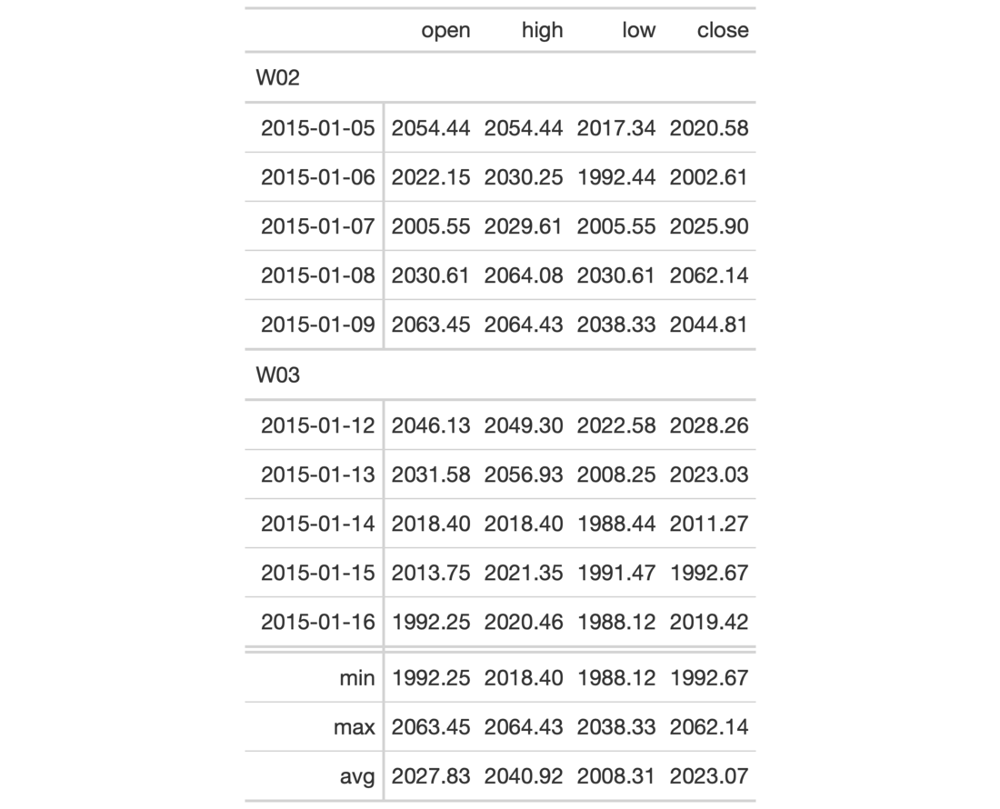

Add grand summary rows to the gt table by using applying aggregation
functions to the table data. The summary rows incorporate all of the
available data, regardless of whether some of the data are part of row
groups. You choose how to format the values in the resulting summary cells by
use of a formatter function (e.g, fmt_number) and any relevant options.
grand_summary_rows( data, columns = TRUE, fns, missing_text = "---", formatter = fmt_number, ... )
| data | A table object that is created using the |
|---|---|
| columns | The columns for which the summaries should be calculated. |
| fns | Functions used for aggregations. This can include base functions
like |
| missing_text | The text to be used in place of |
| formatter | A formatter function name. These can be any of the |
| ... | Values passed to the |
An object of class gt_tbl.
Should we need to obtain the summary data for external purposes, the
extract_summary() function can be used with a gt_tbl object where grand
summary rows were added via grand_summary_rows().

6-2
Other Add Rows:
summary_rows()
# Use `sp500` to create a gt table with # row groups; create grand summary rows # (`min`, `max`, `avg`) for the table tab_1 <- sp500 %>% dplyr::filter( date >= "2015-01-05" & date <="2015-01-16" ) %>% dplyr::arrange(date) %>% dplyr::mutate( week = paste0( "W", strftime(date, format = "%V")) ) %>% dplyr::select(-adj_close, -volume) %>% gt( rowname_col = "date", groupname_col = "week" ) %>% grand_summary_rows( columns = vars(open, high, low, close), fns = list( min = ~min(.), max = ~max(.), avg = ~mean(.)), formatter = fmt_number, use_seps = FALSE )